2-10막 · 호문쿨루스의 탐색
한국어 번역은 독일어 원문에 대응하는 자동 번역 초안입니다.
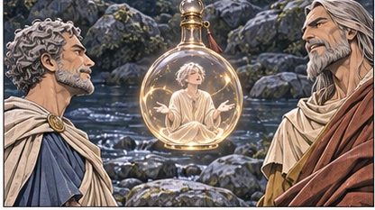
독일어 원문 · 한국어 번역
HOMUNCULUS:
Laßt mich an eurer Seite gehn.
Mir selbst gelüstet's, zu entstehn!
ANAXAGORAS:
Hast du, o Thales, je in einer Nacht
Solch einen Berg aus Schlamm hervorgebracht?호문쿨루스: 당신 옆에서 걷게 해주세요. 나는 나 자신이 나타나기를 갈망한다! 아낙사고라스: 오 탈레스님, 하룻밤에 그런 적이 있나요? 진흙으로 이런 산을 만들었다고?
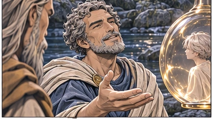
독일어 원문 · 한국어 번역
THALES:
Nie war Natur und ihr lebendiges Fließen
Auf Tag und Nacht und Stunden angewiesen.
Sie bildet regelnd jegliche Gestalt,
Und selbst im Großen ist es nicht Gewalt.탈레스: 자연과 그 생명의 흐름은 한 번도 거기에 있었던 적이 없습니다. 낮과 밤, 시간에 따라 다릅니다. 그것은 모든 형태를 규제하고, 그리고 대규모라 할지라도 그것은 폭력이 아닙니다.
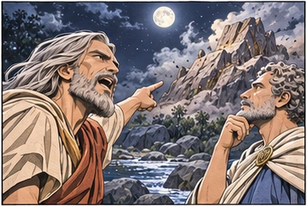
독일어 원문 · 한국어 번역
ANAXAGORAS:
Hier aber war's! Plutonisch grimmig Feuer,
äolischer Dünste Knallkraft, ungeheuer,
Durchbrach des flachen Bodens alte Kruste,
Daß neu ein Berg sogleich entstehen mußte.아낙사고라스: 하지만 여기 있었어요! 명성성 치열한 화재, 바람의 증기, 엄청난 힘, 평지의 오래된 껍질을 뚫고, 새로운 산이 즉시 솟아나야 한다는 것입니다.
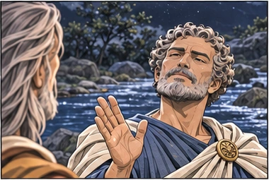
독일어 원문 · 한국어 번역
THALES:
Was wird dadurch nun weiter fortgesetzt?
Er ist auch da, und das ist gut zuletzt.
Mit solchem Streit verliert man Zeit und Weile
Und führt doch nur geduldig Volk am Seile.탈레스: 이게 지금 계속되는 건가요? 그 사람도 거기 있고 결국엔 그게 좋은 거죠. 그런 논쟁으로 시간과 시간을 낭비한다 그리고 그는 인내심을 갖고 사람들을 밧줄로 인도합니다.
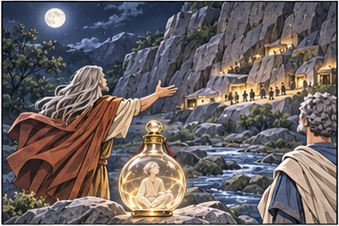
독일어 원문 · 한국어 번역
ANAXAGORAS:
Schnell quillt der Berg von Myrmidonen,
Die Felsenspalten zu bewohnen;
Pygmäen, Imsen, Däumerlinge
Und andre tätig kleine Dinge.아낙사고라스: 산은 미르미돈으로 빠르게 부풀어오르고, 바위 틈새에 서식하기 위해; 피그미족, 임센족, 엄지손가락족 그리고 다른 사람들은 작은 일을 합니다.
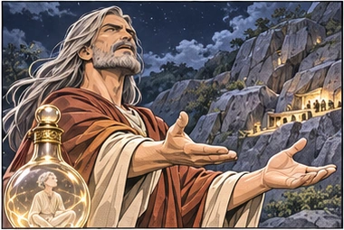
독일어 원문 · 한국어 번역
Nie hast du Großem nachgestrebt,
Einsiedlerisch-beschränkt gelebt;
Kannst du zur Herrschaft dich gewöhnen,
So laß ich dich als König krönen.당신은 위대함을 열망한 적이 없습니다. 은둔자처럼 제한된 방식으로 살았습니다. 지배에 익숙해질 수 있을까? 그러니 내가 너를 왕으로 삼겠다.
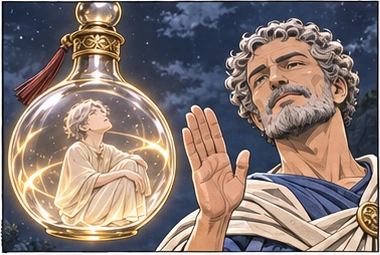
독일어 원문 · 한국어 번역
HOMUNCULUS:
Was sagt mein Thales? +
THALES:
Will's nicht raten;
Mit Kleinen tut man kleine Taten,
Mit Großen wird der Kleine groß.호문쿨루스: 내 탈레스는 뭐라고 말합니까? + 탈레스: 추측하고 싶지 않습니다. 어린아이들과 함께 작은 일을 하고, 큰 일이 있으면 작은 일도 커집니다.
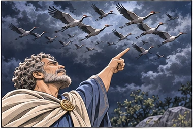
독일어 원문 · 한국어 번역
Sieh hin! die schwarze Kranichwolke!
Sie droht dem aufgeregten Volke
Und würde so dem König drohn.
Mit scharfen Schnäbeln, krallen Beinen,보세요! 검은 두루미 구름! 그녀는 흥분한 사람들을 위협한다 그리고 그렇게 왕을 위협할 것입니다. 날카로운 부리와 발톱 달린 다리,
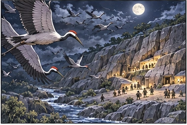
독일어 원문 · 한국어 번역
Sie stechen nieder auf die Kleinen;
Verhängnis wetterleuchtet schon.
Ein Frevel tötete die Reiher,
Umstellend ruhigen Friedensweiher.그들은 어린 아이들을 찌릅니다. 파멸은 이미 다가오고 있습니다. 범죄로 인해 왜가리가 죽었습니다. 주변에는 조용한 평화 연못이 있습니다.
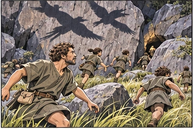
독일어 원문 · 한국어 번역
Doch jener Mordgeschosse Regen
Schafft grausam-blut'gen Rachesegen,
Erregt der Nahverwandten Wut
Nach der Pygmäen frevlem Blut.하지만 그 살인탄은 비처럼 쏟아져 잔인하고 피비린내 나는 복수의 축복을 만들어내며, 가까운 친척들에게 분노를 불러일으킨다 피그미족의 사악한 피 이후.
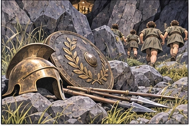
독일어 원문 · 한국어 번역
Was nützt nun Schild und Helm und Speer?
Was hilft der Reiherstrahl den Zwergen?
Wie sich Daktyl und Imse bergen!
Schon wankt, es flieht, es stürzt das Heer.이제 방패와 투구와 창이 무슨 소용이 있겠습니까? 왜가리 가오리는 드워프들을 어떻게 돕나요? 닥틸과 임세가 서로를 숨기는 방법! 이미 휘청거리고 있고, 도망가고 있으며, 군대는 무너지고 있습니다.
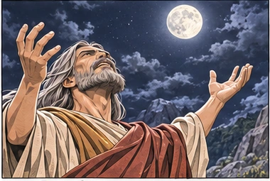
독일어 원문 · 한국어 번역
ANAXAGORAS:
Konnt' ich bisher die Unterirdischen loben,
So wend' ich mich in diesem Fall nach oben...
Du! droben ewig Unveraltete,
Dreinamig-Dreigestaltete,아낙사고라스: 내가 지하에 있는 자들을 칭찬할 수 있었던 적이 있었느냐? 그래서 이 경우에는 올라가겠습니다... 당신! 위의 영원히 쓸모없는 것들, 세 이름-세 형태,
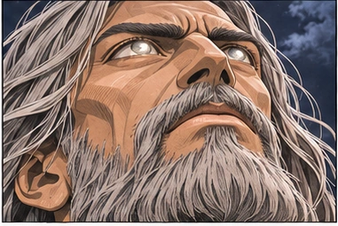
독일어 원문 · 한국어 번역
Dich ruf' ich an bei meines Volkes Weh,
Diana, Luna, Hekate!
Du Brusterweiternde, im Tiefsten Sinnige,
Du Ruhigscheinende, Gewaltsam-Innige,나는 내 백성의 슬픔 때문에 당신을 부릅니다. 다이아나, 루나, 헤카테! 당신은 가슴을 확장하고, 매우 현명한 사람, 당신은 차분해 보이지만 폭력적이고 친밀한 사람,
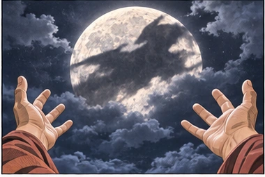
독일어 원문 · 한국어 번역
Eröffne deiner Schatten grausen Schlund,
Die alte Macht sei ohne Zauber kund!
Bin ich zu schnell erhört?
Hat mein Flehn당신의 그림자의 무시무시한 아귀를 열어 주소서. 마법 없이도 옛 힘이 알려지게 해주세요! 내 말을 너무 빨리 듣는 걸까? 내 요청이 있나요?
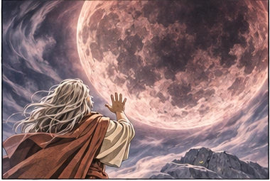
독일어 원문 · 한국어 번역
Nach jenen Höhn
Die Ordnung der Natur gestört?
Und größer, immer größer nahet schon
Der Göttin rundumschriebner Thron,그 조롱 뒤에 자연의 질서가 교란되었는가? 그리고 더 크고, 더 크고, 더 큰 것이 이미 다가오고 있습니다. 여신의 제한된 왕좌,
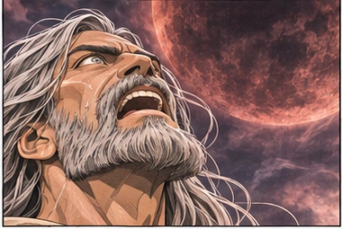
독일어 원문 · 한국어 번역
Dem Auge furchtbar, ungeheuer!
Ins Düstre rötet sich sein Feuer...
Nicht näher, drohend-mächtige Runde!
Du richtest uns und Land und Meer zugrunde!눈에 끔찍하고, 괴물같아! 그의 불은 어둠 속으로 붉어진다... 더 가깝고 위협적이며 강력한 라운드는 없습니다! 당신은 우리와 땅과 바다를 파괴했습니다!
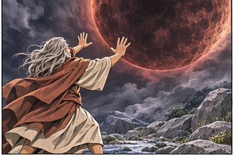
독일어 원문 · 한국어 번역
So wär' es wahr, daß dich thessalische Frauen
In frevlend magischem Vertrauen
Von deinem Pfad herabgesungen,
Verderblichstes dir abgerungen?...그렇다면 테살리아 여자들이 당신을 사랑한다는 것은 사실일 것입니다 엄청나게 마법 같은 신뢰 속에서 당신의 길에서 노래를 부르며, 당신에게서 빼앗은 가장 해로운 것은?...
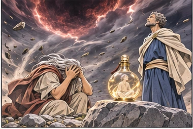
독일어 원문 · 한국어 번역
Das lichte Schild hat sich umdunkelt,
Auf einmal reißt's und blitzt und funkelt!
Welch ein Geprassel! Welch ein Zischen!
Ein Donnern, Windgetüm dazwischen!--밝은 방패가 어두워졌고, 갑자기 눈물이 나고 번쩍이고 반짝인다! 얼마나 큰 포효입니까! 정말 쉿! 천둥, 폭풍우 사이!--
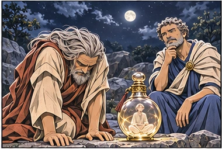
독일어 원문 · 한국어 번역
Demütig zu des Thrones Stufen!--
Verzeiht! Ich hab' es hergerufen.
THALES:
Was dieser Mann nicht alles hört' und sah!
Ich weiß nicht recht, wie uns geschah,보좌의 계단으로 겸손히 나아가라!-- 용서해주세요! 여기로 전화했어요 탈레스: 이 사람이 듣지도 보지도 못한 것을! 우리에게 무슨 일이 일어났는지는 잘 모르겠지만,
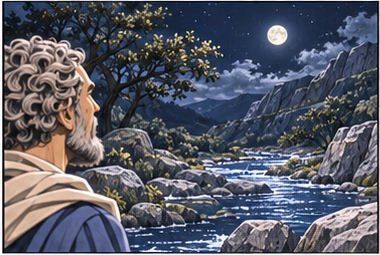
독일어 원문 · 한국어 번역
Auch hab' ich's nicht mit ihm empfunden.
Gestehen wir, es sind verrückte Stunden,
Und Luna wiegt sich ganz bequem
An ihrem Platz, so wie vordem.나도 그 사람에 대해 같은 느낌이 들지 않았습니다. 인정하자, 지금은 미친 시간이다. 그리고 루나는 아주 편안하게 몸을 흔들고 있어요 예전처럼 그녀의 자리에.
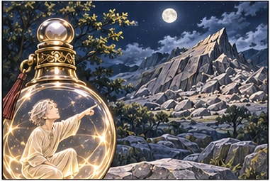
독일어 원문 · 한국어 번역
HOMUNCULUS:
Schaut hin nach der Pygmäen Sitz!
Der Berg war rund, jetzt ist er spitz.
Ich spürt' ein ungeheures Prallen,
Der Fels war aus dem Mond gefallen;호문쿨루스: 피그미 좌석 좀 보세요! 산은 둥글었는데 이제는 뾰족해진다. 엄청난 튕김을 느꼈고, 그 바위는 달에서 떨어졌다.
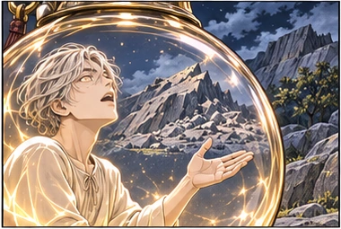
독일어 원문 · 한국어 번역
Gleich hat er, ohne nachzufragen,
So Freund als Feind gequetscht, erschlagen.
Doch muß ich solche Künste loben,
Die schöpferisch, in einer Nacht,묻지도 않고 바로 그 사람이 그래서 적으로서의 친구는 무너지고 죽임을 당했습니다. 그러나 나는 그러한 예술을 칭찬해야 한다. 어느 날 밤에 창의적으로
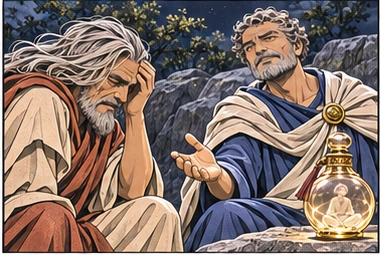
독일어 원문 · 한국어 번역
Zugleich von unten und von oben,
Dies Berggebäu zustand gebracht.
THALES:
Sei ruhig! Es war nur gedacht.
Sie fahre hin, die garstige Brut!동시에 아래로부터, 위로부터, 이 산 건물이 생겼습니다. 탈레스: 조용히 하세요! 그것은 단지 생각이었습니다. 놔줘, 이 더러운 놈들아!
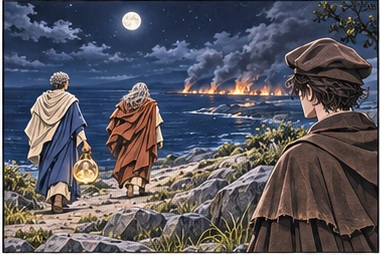
독일어 원문 · 한국어 번역
Daß du nicht König warst, ist gut.
Nun fort zum heitern Meeresfeste,
Dort hofft und ehrt man Wundergäste.
MEPHISTOPHELES:
Da muß ich mich durch steile Felsentreppen,네가 왕이 아니어서 다행이다. 이제 신나는 바다축제로 떠나요, 그곳에서 그들은 기적의 손님을 바라고 존경합니다. 메피스토펠레스: 가파른 바위계단을 지나야 하는데,
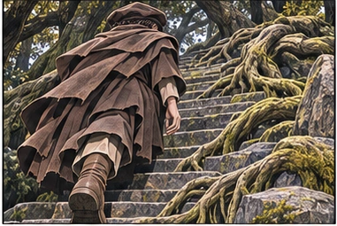
독일어 원문 · 한국어 번역
Durch alter Eichen starre Wurzeln schleppen!
Auf meinem Harz der harzige Dunst
Hat was vom Pech, und das hat meine Gunst,
Zunächst dem Schwefel... Hier, bei diesen Griechen오래된 참나무 사이로 굳은 뿌리를 질질 끌며! 내 수지에 있는 수지 같은 안개 약간의 불운이군요. 그게 제게 유리하네요. 우선 유황이... 여기 이 그리스인들과 함께
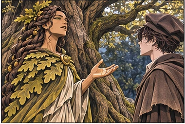
독일어 원문 · 한국어 번역
Ist von dergleichen kaum die Spur zu riechen;
Neugierig aber wär' ich, nachzuspüren,
Womit sie Höllenqual und--flamme schüren.
DRYAS:
In deinem Lande sei einheimisch klug,냄새를 맡을 만한 흔적은 거의 없습니다. 하지만 조사해 보고 싶군요. 그것으로 그들은 지옥 같은 고통과 불길을 불러일으킵니다. 드라이아스: 당신의 땅에서는 현명한 원주민이 되십시오.
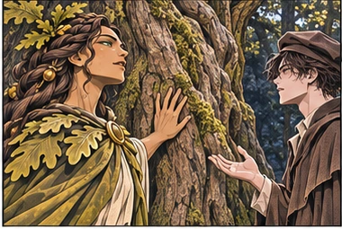
독일어 원문 · 한국어 번역
Im fremden bist du nicht gewandt genug.
Du solltest nicht den Sinn zur Heimat kehren,
Der heiligen Eichen Würde hier verehren.
MEPHISTOPHELES:
Man denkt an das, was man verließ;당신은 다른 일에 능숙하지 않습니다. 마음을 집으로 돌리면 안 돼요. 신성한 참나무들이 이곳에서 예배를 드렸습니다. 메피스토펠레스: 사람은 자신이 남긴 것이 무엇인지 생각합니다.
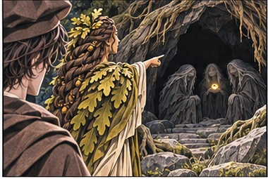
독일어 원문 · 한국어 번역
Was man gewohnt war, bleibt ein Paradies.
Doch sagt: was in der Höhle dort,
Bei schwachem Licht, sich dreifach hingekauert?
DRYAS:
Die Phorkyaden! Wage dich zum Ort당신이 익숙했던 곳은 천국으로 남아 있습니다. 하지만 말해보세요: 저기 동굴에는 무엇이 있나요? 희미한 빛 속에서 세 번 웅크리고 있었나요? 드라이아스: 포르시아드! 해당 위치로 벤처
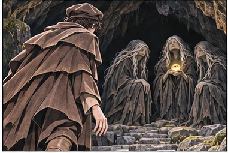
독일어 원문 · 한국어 번역
Und sprich sie sie an, wenn dich nicht schauert.
MEPHISTOPHELES:
Warum denn nicht!--Ich sehe was, und staune!
So stolz ich bin, muß ich mir selbst gestehn:
Dergleichen hab' ich nie gesehn,그리고 떨리지 않으면 그녀에게 말해보세요. 메피스토펠레스: 왜 안돼? 뭔가 보고 깜짝! 나는 내 자신이 자랑스럽기는 하지만 다음과 같이 인정해야 합니다. 나는 그런 것을 본 적이 없습니다.
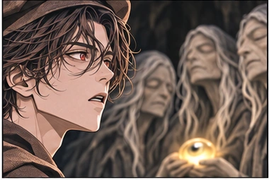
독일어 원문 · 한국어 번역
Die sind ja schlimmer als Alraune...
Wird man die urverworfnen Sünden
Im mindesten noch häßlich finden,
Wenn man dies Dreigetüm erblickt?맨드레이크보다 더 나빠요... 하나는 원죄가 된다 적어도 추악한 것을 찾으십시오 이 트리오를 보면?
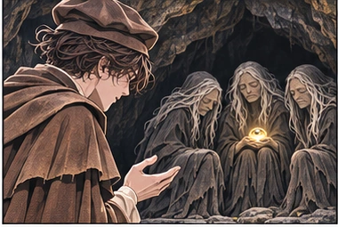
독일어 원문 · 한국어 번역
Wir litten sie nicht auf den Schwellen
Der grauenvollsten unsrer Höllen.
Hier wurzelt's in der Schönheit Land,
Das wird mit Ruhm antik genannt...우리는 문지방에서 그들을 겪지 않았습니다 우리 지옥 중 가장 끔찍한 곳. 이곳은 대지의 아름다움에 뿌리를 두고 있습니다. 이걸 고대라고 부르는데...
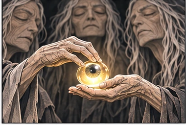
독일어 원문 · 한국어 번역
Sie regen sich, sie scheinen mich zu spüren,
Sie zwitschern pfeifend, Fledermaus-Vampyren.
PHORKYAS:
Gebt mir das Auge, Schwestern, daß es frage,
Wer sich so nah an unsre Tempel wage.그들은 휘젓고, 나를 느끼는 것 같아 그들은 지저귀고 휘파람을 불며 흡혈귀를 쫓습니다. 포르키아스: 자매들이여, 나에게 물어볼 수 있는 눈을 주십시오 감히 우리 사원에 가까이 다가가려는 사람.
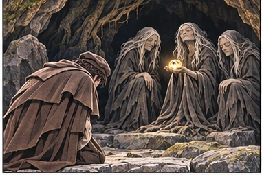
독일어 원문 · 한국어 번역
MEPHISTOPHELES:
Verehrteste! Erlaubt mir, euch zu nahen
Und euren Segen dreifach zu empfahen.
Ich trete vor, zwar noch als Unbekannter,
Doch, irr' ich nicht, weitläufiger Verwandter.메피스토펠레스: 친애하는! 내가 당신에게 가까이 다가갈 수 있게 해주세요 그리고 당신의 축복을 세 배로 받으십시오. 나는 앞으로 나아간다, 비록 아직은 알려지지 않았지만, 네, 제 말이 틀리지 않았습니다, 먼 친척이여.
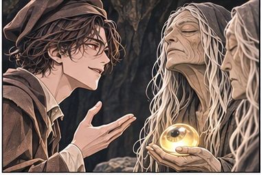
독일어 원문 · 한국어 번역
Altwürdige Götter hab' ich schon erblickt,
Vor Ops und Rhea tiefstens mich gebückt;
Die Parzen selbst, des Chaos, eure Schwestern,
Ich sah sie gestern--oder ehegestern;나는 이미 고대 신들을 보았습니다. 나는 Ops와 Rhea 앞에 깊이 절했습니다. 운명 그 자체, 카오스, 당신의 자매들, 나는 어제 그녀를 보았습니다. 아니면 그 전날에도요.
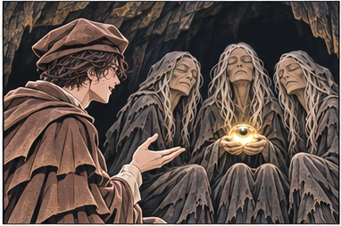
독일어 원문 · 한국어 번역
Doch euresgleichen hab' ich nie erblickt.
Ich schweige nun und fühle mich entzückt.
PHORKYADEN:
Er scheint Verstand zu haben, dieser Geist.
MEPHISTOPHELES:
Nur wundert's mich, daß euch kein Dichter preist.하지만 나는 당신 같은 사람을 본 적이 없습니다. 나는 이제 침묵하고 기뻐합니다. 포르키아데스: 센스가 있는 것 같군, 이 유령. 메피스토펠레스: 어느 시인도 당신을 칭찬하지 않는다는 사실이 놀랍습니다.
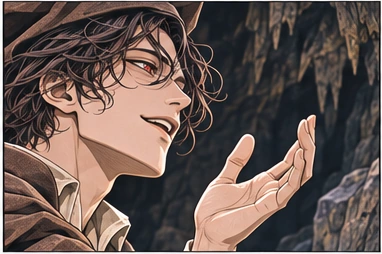
독일어 원문 · 한국어 번역
Und sagt: wie kam's, wie konnte das geschehn?
Im Bilde hab' ich nie euch Würdigste gesehn;
Versuch's der Meißel doch, euch zu erreichen,
Nicht Juno, Pallas, Venus und dergleichen.그리고 말합니다: 어떻게 이런 일이 일어날 수 있었습니까? 나는 사진 속에서 당신이 가장 가치 있는 모습을 본 적이 없습니다. 끌이 당신에게 닿도록 하세요. Juno, Pallas, Venus 등은 아닙니다.
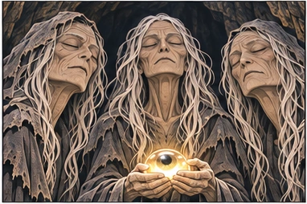
독일어 원문 · 한국어 번역
PHORKYADEN:
Versenkt in Einsamkeit und stillste Nacht,
Hat unser Drei noch nie daran gedacht!
MEPHISTOPHELES:
Wie sollt' es auch? da ihr, der Welt entrückt,
Hier niemand seht und niemand euch erblickt.포르키아데스: 외로움과 가장 조용한 밤에 잠겨, 우리 셋은 그런 생각을 해 본 적이 없어요! 메피스토펠레스: 어떻게 그럴 수 있니? 당신이 세상에서 제거된 이후로, 여기서는 아무도 당신을 볼 수 없고 누구도 당신을 볼 수 없습니다.
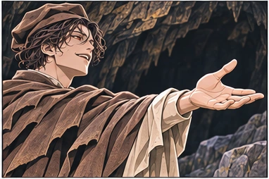
독일어 원문 · 한국어 번역
Da müßtet ihr an solchen Orten wohnen,
Wo Pracht und Kunst auf gleichem Sitze thronen,
Wo jeden Tag, behend, im Doppelschritt,
Ein Marmorblock als Held ins Leben tritt.이런 곳에서 살아야 할텐데, 화려함과 예술이 같은 자리에 앉아 있는 곳, 매일, 민첩하게, 두 걸음씩, 대리석 블록이 영웅으로 살아납니다.
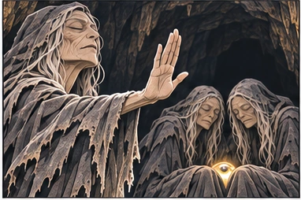
독일어 원문 · 한국어 번역
Wo-- +
PHORKYADEN:
Schweige still und gib uns kein Gelüsten!
Was hülf' es uns, und wenn wir's besser wüßten?
In Nacht geboren, Nächtlichem verwandt,어디에-- + 포르키아데스: 침묵하고 우리에게 어떤 욕망도 주지 마십시오! 우리가 더 잘 안다면 우리에게 무슨 소용이 있을까요? 밤에 태어나 밤과 관련된,
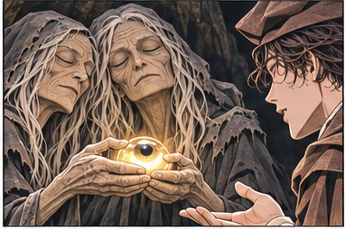
독일어 원문 · 한국어 번역
Beinah uns selbst, ganz allen unbekannt.
MEPHISTOPHELES:
In solchem Fall hat es nicht viel zu sagen,
Man kann sich selbst auch andern übertragen.
Euch dreien gnügt ein Auge, gnügt ein Zahn;우리 자신에게는 거의 알려지지 않았고 모든 사람에게는 완전히 알려지지 않았습니다. 메피스토펠레스: 그런 경우에는 별로 의미가 없습니다 자신을 다른 사람에게 전송할 수도 있습니다. 세 분에게는 눈 하나, 치아 하나면 충분합니다.
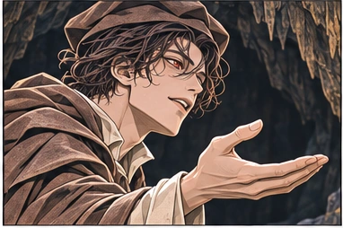
독일어 원문 · 한국어 번역
Da ging' es wohl auch mythologisch an,
In zwei die Wesenheit der drei zu fassen,
Der Dritten Bildnis mir zu überlassen,
Auf kurze Zeit. +아마도 신화적이기도 했을 것입니다. 셋의 본질을 둘로 파악하려면, 세 번째 이미지는 나에게 맡기고, 짧은 시간 동안. +
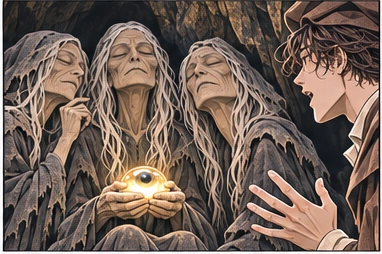
독일어 원문 · 한국어 번역
EINE:
Wie dünkt's euch? ging' es an?
DIE ANDERN:
Versuchen wir's!--doch ohne Aug' und Zahn.
MEPHISTOPHELES:
Nun habt ihr grad das Beste weggenommen;
Wie würde da das strengste Bild vollkommen!답: 기분이 어때요? 켜져 있었어? 기타: 한번 해보자!-하지만 눈이나 이빨이 없다. 메피스토펠레스: 이제 당신은 가장 좋은 부분을 제거했습니다. 가장 엄격한 이미지가 얼마나 완벽할까요!
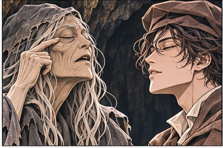
독일어 원문 · 한국어 번역
EINE:
Drück du ein Auge zu, 's ist leicht geschehn,
Laß alsofort den einen Raffzahn sehn,
Und im Profil wirst du sogleich erreichen,
Geschwisterlich vollkommen uns zu gleichen.답: 눈을 감으면 쉬워요 이제 너덜너덜한 치아 하나를 살펴보겠습니다. 그리고 프로필에서 즉시 도달하게 될 것입니다. 형제 자매 측면에서 우리와 완전히 같을 것입니다.
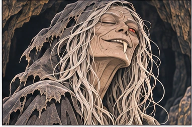
독일어 원문 · 한국어 번역
MEPHISTOPHELES:
Viel Ehr'! Es sei! +
PHORKYADEN:
Es sei! +
MEPHISTOPHELES:
Da steh' ich schon,
Des Chaos vielgeliebter Sohn!메피스토펠레스: 큰 영광입니다! 그렇게 하세요! + 포르키아데스: 그렇게 하세요! + 메피스토펠레스: 나는 이미 그 자리에 서 있다. 카오스의 사랑하는 아들이여!
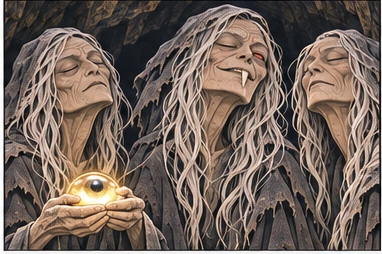
독일어 원문 · 한국어 번역
PHORKYADEN:
Des Chaos Töchter sind wir unbestritten.
MEPHISTOPHELES:
Man schilt mich nun, o Schmach, Hermaphroditen.
PHORKYADEN:
Im neuen Drei der Schwestern welche Schöne!포르키아데스: 우리는 확실한 혼돈의 딸들입니다. 메피스토펠레스: 나는 지금 꾸중을 받고 있다. 아, 부끄럽다, 자웅동체야. 포르키아데스: 새로운 Three of the Sisters는 정말 아름답습니다!
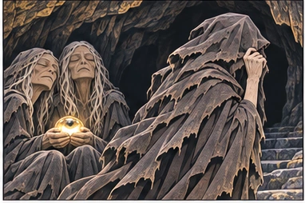
독일어 원문 · 한국어 번역
Wir haben zwei der Augen, zwei der Zähne.
MEPHISTOPHELES:
Vor aller Augen muß ich mich verstecken,
Im Höllenpfuhl die Teufel zu erschrecken.
우리에게는 눈이 두 개 있고, 이빨도 두 개가 있습니다. 메피스토펠레스: 눈에 잘 띄지 않게 숨어야 하는데, 지옥 구덩이에 있는 마귀들을 겁주려고.